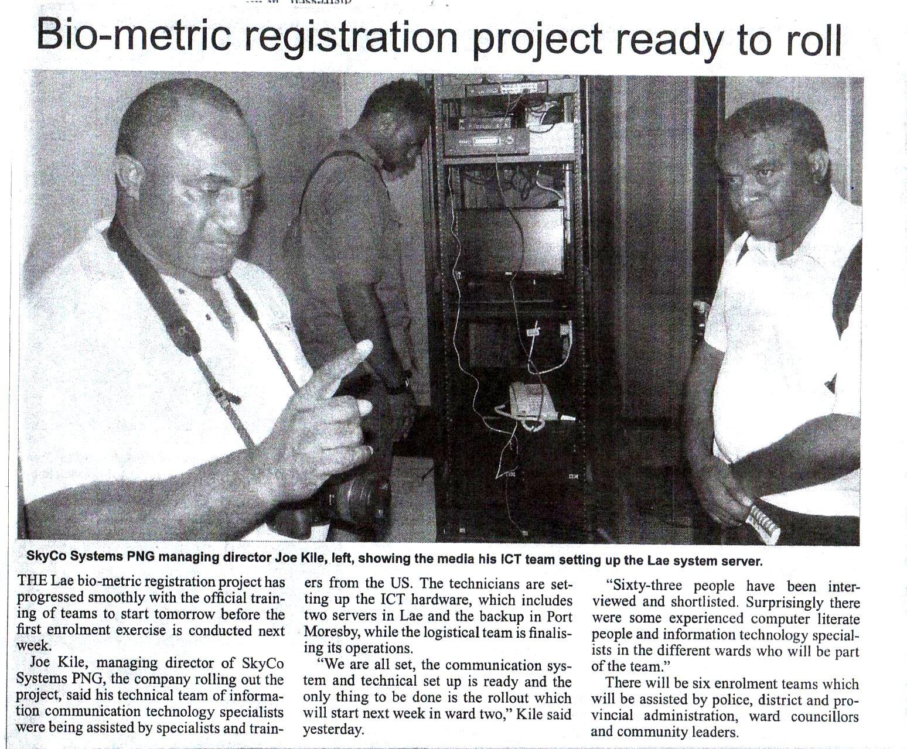
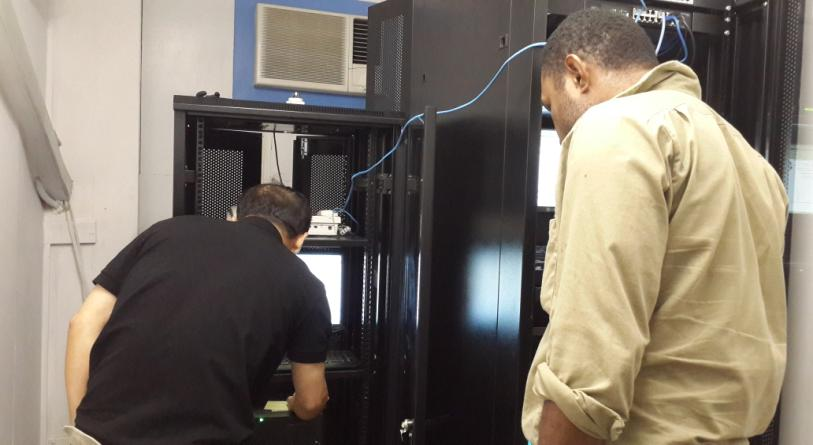
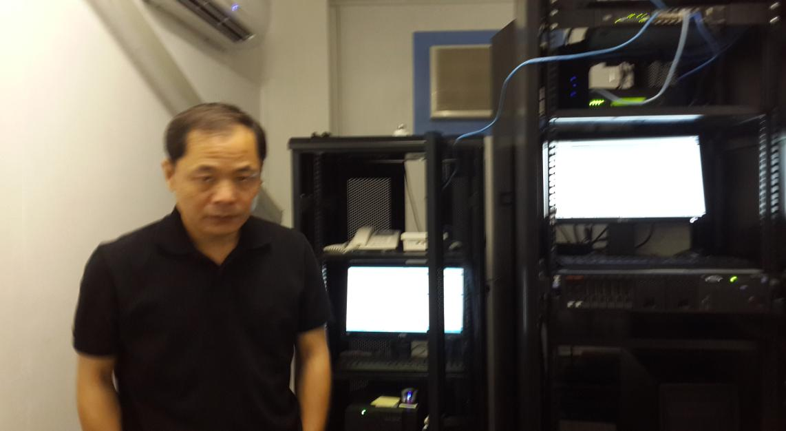
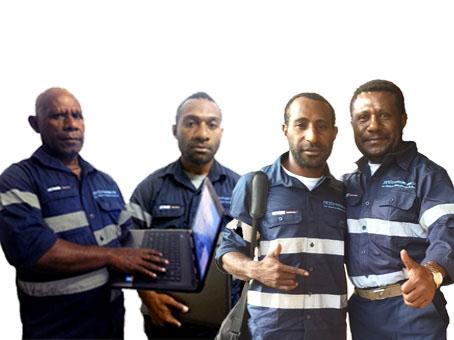
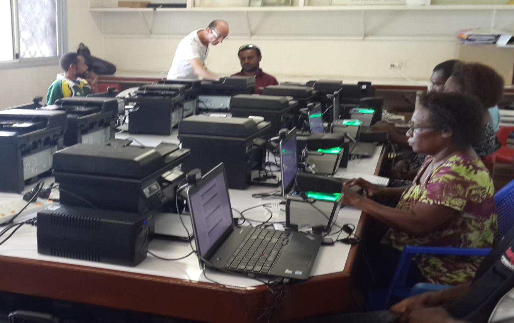

Skyco Technology Limited was established in 2007 with a strong focus on developing secure digital systems for governance and electoral processes. Over the years, the company has worked closely with international technology partners to design customer based identity systems.
Prime Minister Peter O’Neil officially launched the Biometric Project in Lae at the Polytechnic College in July 2013. In which the full cabinet and the Government of PNG all at one time came to Lae and during which they witnessed official launching of the Project. Minister for National Planning and Monitoring including other MP’s support the initiative and the pilot project. Systems Co-Developer Dr. Bruno Lassus from 3M Cogent and SkyCo reps came for the event. Demonstration were done to Members of Parliament and dignitaries about the systems functionality and capabilities. The Pilot Project was the direct fulfillment of the Alotau accord.

SkyCo went through some of the Lae’s most notorious communities, Some people did not want to register at all. Our awareness teams and councilors participation did an amazing job in that area of information and awareness to the ward areas. Where they did not go, SkyCo Teams went far out into the most notorious zones and settlements in educating the people. Because the councilors have their boundaries and limitations. They have little community politics with certain members of the community. That community taking ownership is proved in the overwhelming community participation and allowing and protecting the enrolment sites.
And as is the case, every new concept any one introduces does not go unchallenged and unchecked, it will face criticism, it is just normal to see and face those challenges and criticisms, this is part of the settling in process of any new concept the Government wants to bring in for the good of the people. And we accept it and today the Government of Papua New Guinea boasts and legitimizes NID as compulsory requirement to access government services. A work that deserves recognition where its due. For the love of the country and the progress of our nation.
Download SkyCo 2022 Election Review PDFSkyCo seems to be the only Biometric Developer in the Country, and therefore was asked by the Civil Registry and the NID working Committee to assist in the initial documentation of the Legal Framework. SkyCo’s participation contributed in terms of the Biometrics Technology applications and the amendments that include the Biometric Features in Law. Analytical contribution extracting from best practices around the globe. And integrating our PNG practices into the technology aspect in the Civil Registration Process.
Biometric rollout in Lae.
Secure Biometric Registration update.
Interview for Lae Pilot Project

Skyco Chief Engineers with hands on experience working closely with our international partners to design and implement biometric voter registration and voting systems.

Our Server Systems Administrator from USA who have worked with us when Skyco first got contracted to carry out the first ever biometric population registration in PNG, Lae, Morobe Province 2013.

SkyCo employees in this current exercise, we have a staff strength of 32 strongman including 7 IT personnel’s attached. And another 64 personnel from the 23 respective wards Councils as IT Table operators. In addition, we include the 23 ward Councilors themselves with their 20 CDO’s and 20 church reps and Volunteer Government workers plus 10 people from each 23 ward councils as awareness and security personnel’s. The awareness was carried out by those community representatives.
The Mi15 is a hand held Machine that does mobile verification on the go at any remote locations. This machine is for verification of any registered person. It works anywhere as it is web based. And can operate under any communication network as long as there is Communication signal and internet access. Here it is used to configure with the server at the main base in Lae Tutumang to connect to POM base. The purpose is to use them to verify population after registration is fully done. The database in the main base server responds within less than 2 seconds when someone place his finger to verify within the database.

Training and test are done in order to ensure that those who will be doing the enrollment does not face problem of delay due to skills or speed or accuracy of data entry. Therefore after the test is done, SkyCo trail the efficient and fast IT person to real time test. And measure against a set time to conclude in the enrollment process. In fact there are many questions to be filled in or answered during the enrollment exercise.